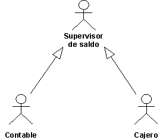

|
Varios actores pueden realizar el mismo rol en un guión de uso concreto. Así, un Cajero y un Contable, que comprueban
el balance de una cuenta, se consideran como la misma entidad externa del guión de uso que realiza la comprobación. El
rol compartido está modelado como actor, Supervisor de balances, heredado de dos actores originales. Esta relación se
muestra con las generalizaciones de actor.

Los actores Cajero y Contable heredan todas las propiedades del Supervisor de balances. Por lo tanto, estos actores
pueden actuar como Supervisores de balances.
Un usuario puede desempeñar diferentes roles respecto al sistema, lo que significa que el usuario puede, en realidad,
corresponder a varios actores. Para aclarar el modelo, puede representar al usuario como un actor que hereda varios
actores. Cada actor heredado representa uno de los roles del usuario relativo al sistema.
|